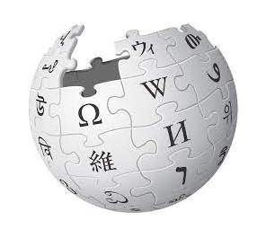

Nace en 1991 la web 1.0 estática de lectura
En 1997 aparece el Buscador de Google y desde entonces se ha convertido en el más popular

En 2001 jimmy wales y larry sangei crean Wikipedia
En 2004 nace la web. Dos dinámica lectura y escritura.
En 2005 se sube el primer video a YouTube Jessica James Garrett crea AJAX una técnica de desarrollo web
En 2006 Web 3.0 apareció por primera vez semántica multimedia
En 2009 Big es el buscador de Microsoft presentado por Steven Ballmer